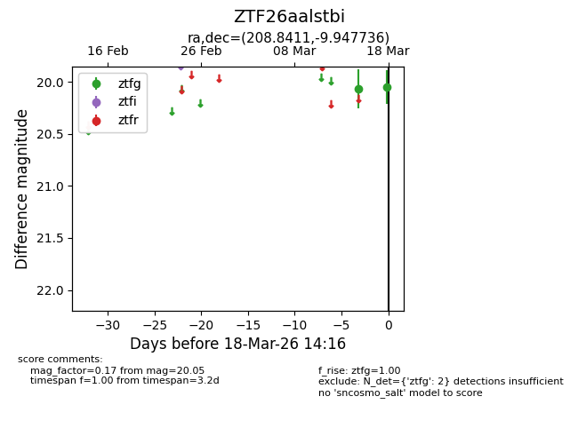
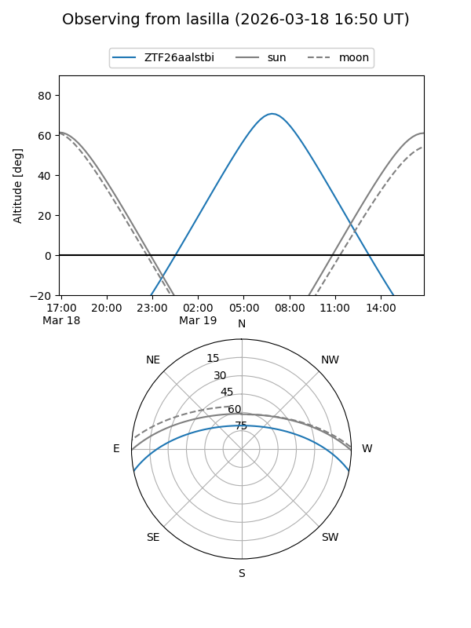
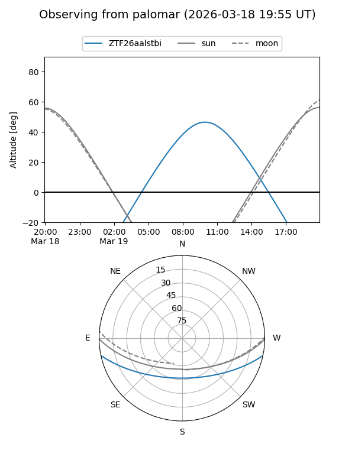

ZTF26aalstbi
Target ZTF26aalstbi at 2026-03-18 14:18
Aliases and brokers:
FINK: link
Lasair: link
ALeRCE: link
alt names
ZTF26aalstbi (ztf,fink_ztf)
Coordinates:
equatorial (ra, dec) = 208.8411,-9.94774
equatorial (HMS+DMS) = 13:55:21.86,-09:56:51.85
galactic (l, b) = (327.7838,+49.81419)
Flags:
Photometry:
last ztfg=20.05
2 ztfg detections
Lightcurve

Visibility


Additional plots